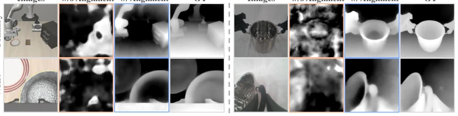
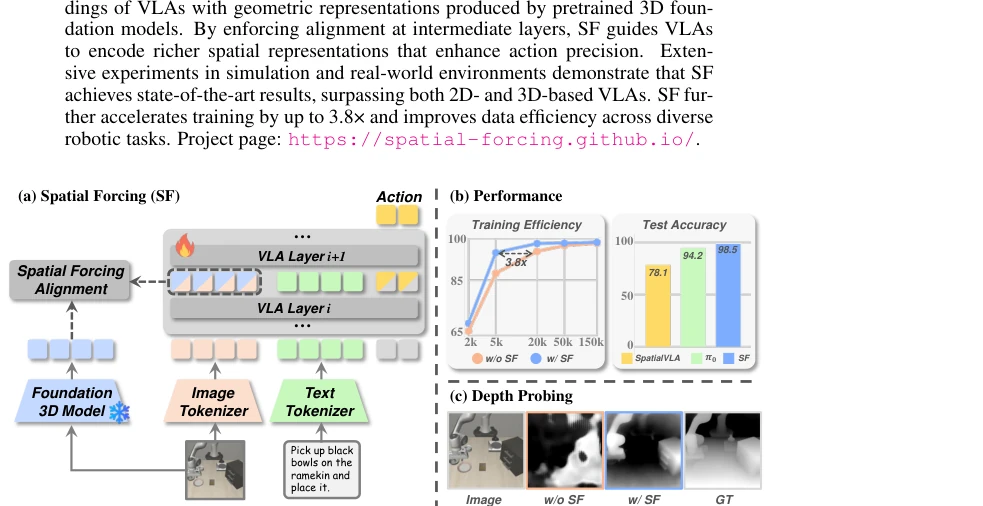
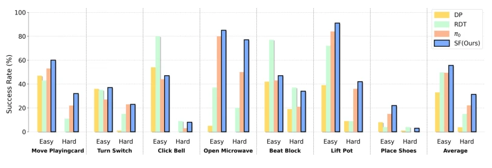
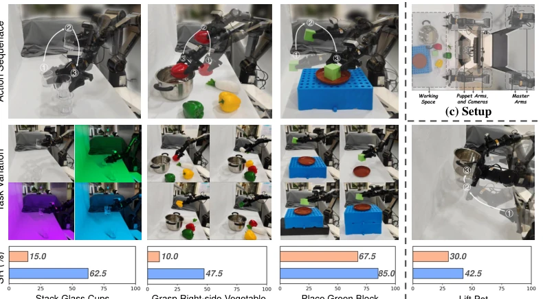

Spatial Forcing: Implicit Spatial Representation Alignment for Vision-language-action Model
Fuhao Li, Wenxuan Song, Han Zhao, Jingbo Wang, Pengxiang Ding, Donglin Wang abspdf
论文点评Review
这篇论文试图用“隐式对齐”解决 VLA 模型缺乏 3D 感知的问题，听起来很性感，毕竟直接上深度相机太麻烦。作者发现现有的 2D VLA 模型视觉嵌入里根本没多少空间信息，于是搞了个 Spatial Forcing (SF)，拿 VGGT 这种 3D 基础模型的几何表示来监督 VLA 的中间层。效果确实猛，LIBERO 上刷榜，训练快 3.8 倍。但吐槽一下，这本质上还是“知识蒸馏”的变种，依赖外部 3D 模型的质量，推理时虽然不用 3D 输入，但训练时得跑个 VGGT，计算开销不算小。而且 VGGT 本身也是基于 2D 图像预测 3D 的，这算不算“用魔法打败魔法”？不过数据效率提升确实值得点赞，对于真实机器人数据稀缺的场景挺实用。
This paper attempts to use "implicit alignment" to address the lack of 3D perception in VLA models, which sounds appealing, given that directly employing depth cameras is too cumbersome. The authors found that existing 2D VLA model visual embeddings contain virtually no spatial information, so they developed Spatial Forcing (SF), using the geometric representation of 3D foundation models like VGGT to supervise VLA's intermediate layers. The results are indeed impressive, topping the leaderboard on LIBERO and training 3.8 times faster. However, a critique is that this is essentially a variant of "knowledge distillation", relying on the quality of external 3D models; although 3D input is not required during inference, VGGT must be run during training, so the computational overhead is not negligible. Moreover, VGGT itself predicts 3D based on 2D images, so does this count as "using magic to defeat magic"? Nevertheless, the improvement in data efficiency is indeed commendable, making it quite practical for scenarios where real robot data is scarce.
研究动机Motivation
核心痛点是 VLA 模型大多基于 2D 视觉语言模型 (VLM) 构建，缺乏精确的空间感知能力，难以适应 3D 物理世界 (Wang et al., 2025c)。现有解决方案要么引入深度相机或激光雷达获取显式 3D 输入 (Chen et al., 2025; Li et al., 2025a)，但这面临传感器噪声、硬件异构及数据集深度信息缺失的挑战 (O’Neill et al., 2024b; Jang et al., 2022)。另一种思路是用深度估计器从 2D 图像推断 3D 信息 (Qu et al., 2025)，但性能受限于估计器本身。作者通过轻量级深度探测实验发现，未经对齐的 VLA 视觉嵌入无法生成有意义的空间结构，因此提出隐式强制 VLA 发展 3D 理解能力，消除对显式 3D 传感器或深度估计器的依赖。
The core pain point is that most VLA models are built upon 2D Vision-Language Models (VLM), lacking precise spatial perception capabilities and struggling to adapt to the 3D physical world (Wang et al., 2025c). Existing solutions either introduce depth cameras or LiDAR to obtain explicit 3D input (Chen et al., 2025; Li et al., 2025a), but this faces challenges such as sensor noise, hardware heterogeneity, and missing depth information in datasets (O’Neill et al., 2024b; Jang et al., 2022). Another approach involves using depth estimators to infer 3D information from 2D images (Qu et al., 2025), but performance is limited by the estimator itself. Through lightweight depth probing experiments, the authors discovered that misaligned VLA visual embeddings cannot generate meaningful spatial structures; therefore, they propose implicit forcing for VLA to develop 3D understanding capabilities, eliminating dependence on explicit 3D sensors or depth estimators.

Figure 3: Depth probing of the visual embeddings of VLAs. Embeddings learned solely from 2D images without alignment do not produce meaningful spatial structures. The aligned embeddings inherently contain rich spatial information, leading to better performance in depth probing.
方法Method
整体流程是在 VLA 训练过程中引入外部 3D 监督信号。首先，利用预训练的 3D 基础模型 VGGT (Wang et al., 2025b) 处理多视图机器人图像，输出像素级空间表示作为目标信号。其次，提取 VLA 模型中间层的视觉嵌入，经过 BatchNorm 和 MLP 投影后，与 VGGT 输出的空间表示进行余弦相似度对齐。创新点在于：1) 隐式对齐策略，不改变推理时的输入结构，无需额外 3D 传感器；2) 监督层选择，VLA 包含 32 层因果注意力层，实验表明监督较深但非最深层（如第 24 层）效果最佳，避免丢失视觉特征；3) 引入位置编码，确保自回归过程中的位置顺序。最终损失函数结合动作生成损失和 3D 对齐损失 (LSF = Laction + αLalign)，通过这种方式将几何先验注入 VLA 的视觉表示中。
The overall process involves introducing external 3D supervision signals during VLA training. First, the pre-trained 3D foundation model VGGT (Wang et al., 2025b) is utilized to process multi-view robot images, outputting pixel-level spatial representations as target signals. Second, visual embeddings from VLA model intermediate layers are extracted, and after BatchNorm and MLP projection, are aligned with VGGT output spatial representations using cosine similarity. The innovations lie in: 1) Implicit alignment strategy, which does not change the input structure during inference and requires no additional 3D sensors; 2) Supervision layer selection, where VLA contains 32 causal attention layers, and experiments indicate that supervising deeper but not the deepest layers (e.g., layer 24) yields the best results, avoiding loss of visual features; 3) Introduction of positional encoding to ensure position order during the autoregressive process. The final loss function combines action generation loss and 3D alignment loss (LSF = Laction + αLalign), injecting geometric priors into VLA's visual representations through this method.

Figure 1: Our proposed method, Spatial Forcing (SF), implicitly forces VLA models to acquire spatial-aware knowledge. (a) SF aligns intermediate visual embeddings of VLAs with geometric representations from pretrained 3D foundation models. (b) Our simple yet effective strategy yields significant improvements in training efficiency and test accuracy. (c) Depth probing proves that our SF brings spatial information into the aligned representations, further enhancing 3D perception.Figure 2: Comparison among different paradigms for 3D VLAs.
Evaluation was conducted on LIBERO and RoboTwin simulation benchmarks as well as real AgileX robots. Baselines include 2D VLA (e.g., OpenVLA, π0) and explicit 3D VLA (e.g., GeoVLA, 3D-CAVLA). The main metric is Success Rate (SR). Results show that SF achieved a 98.5% average success rate on LIBERO, surpassing all methods without extra sensor input and even matching explicit 3D methods. Training efficiency improved 3.8 times; in terms of data efficiency, only 5% of data was needed to achieve a 75.8% success rate. Ablation studies indicate that using VGGT as the target representation with added positional encoding performed best, and supervising layer 24 was superior to other layers. In real-world experiments, SF significantly improved task success rates under conditions such as lighting changes and target object changes, demonstrating its spatial understanding capability.

Figure 4: Comparisons with state-of-the-art methods on RoboTwin 2.0 benchmark.Figure 5: (a) We report the success rates vs. training iterations before and after representation alignment. (b) We report the success rate vs. training data before and after representation alignment. (c) The aligned representation exhibits almost the same distribution shape as the target.

Figure 6: Real-world Experiments. (a) A set of single-arm tasks across various visual and spatial conditions. For each task, we train a unified model to face all variations and report the success rate. (b) Dual-arm tasks to measure the spatial horizontal balance ability. (c) Top-view robot setup.